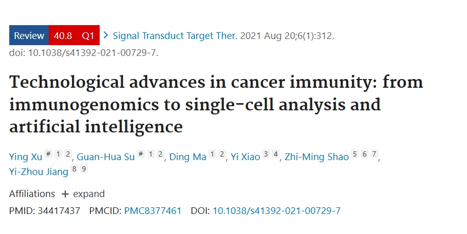
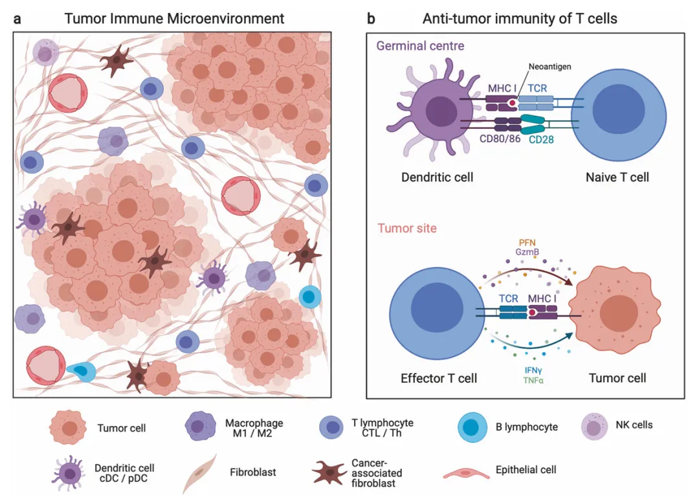
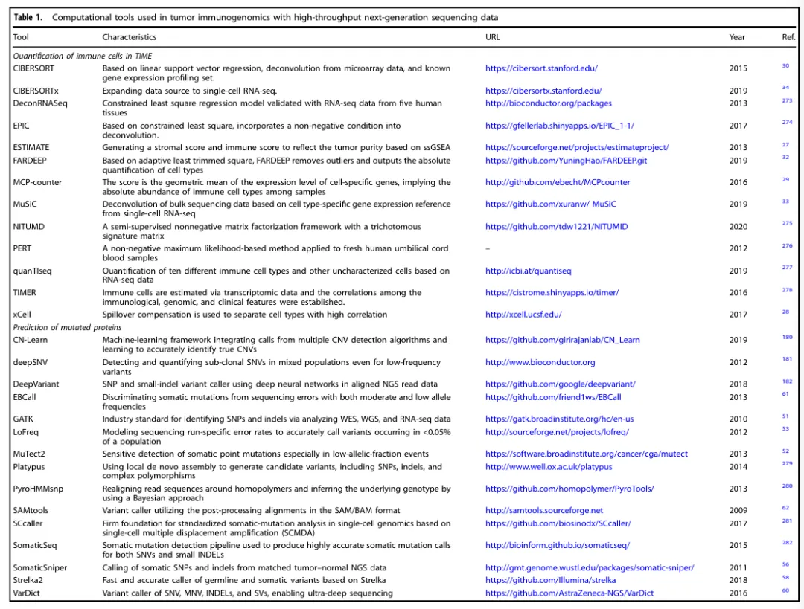
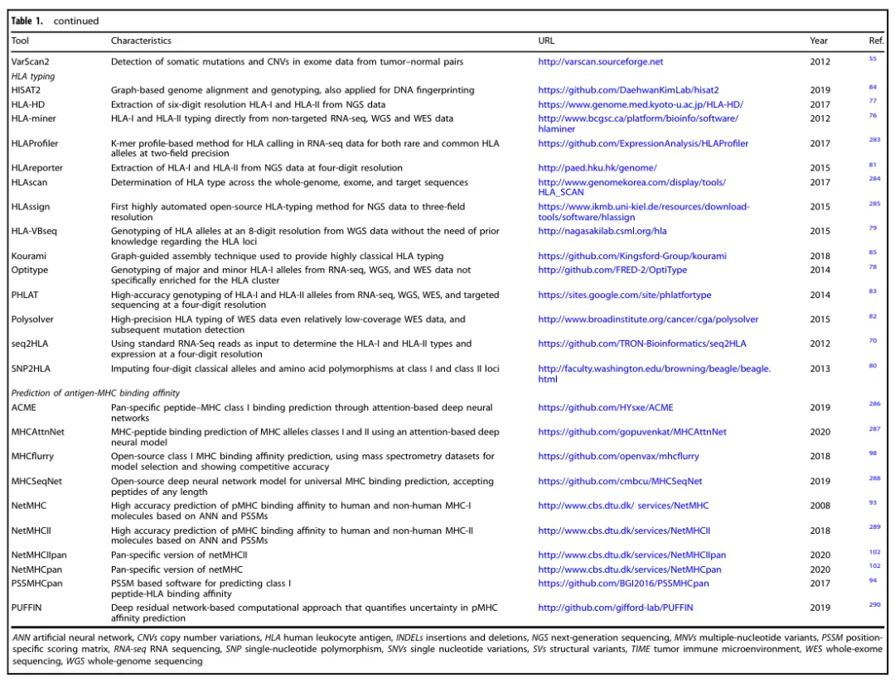
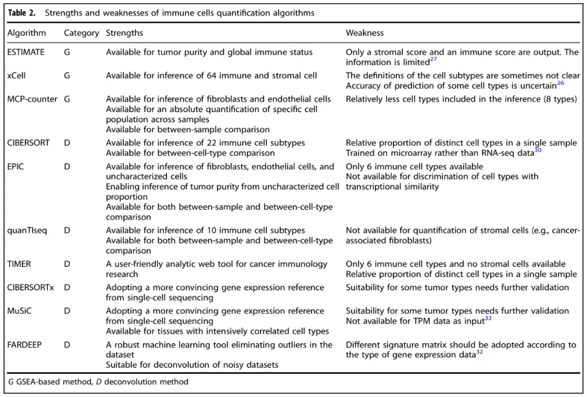
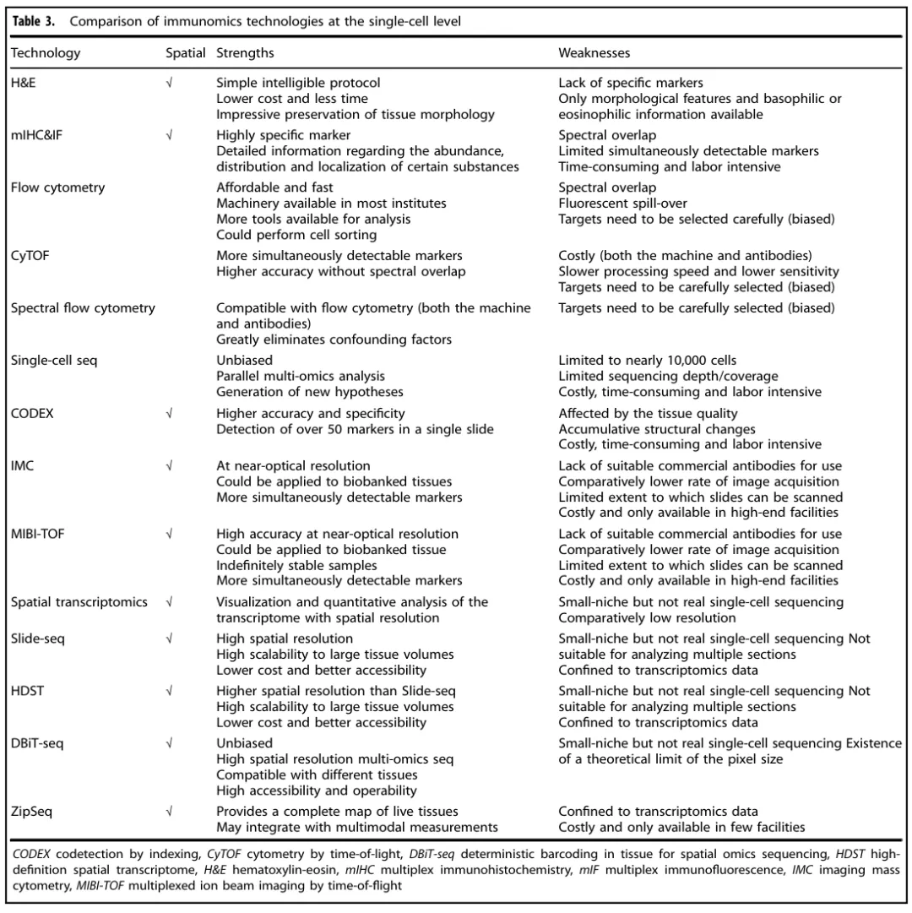
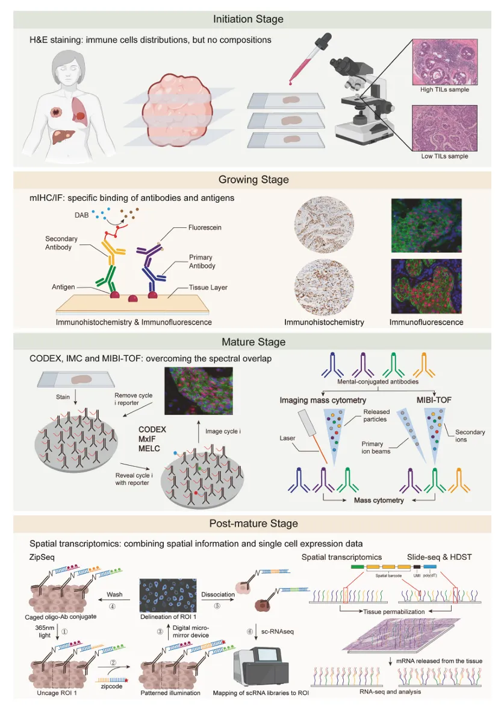
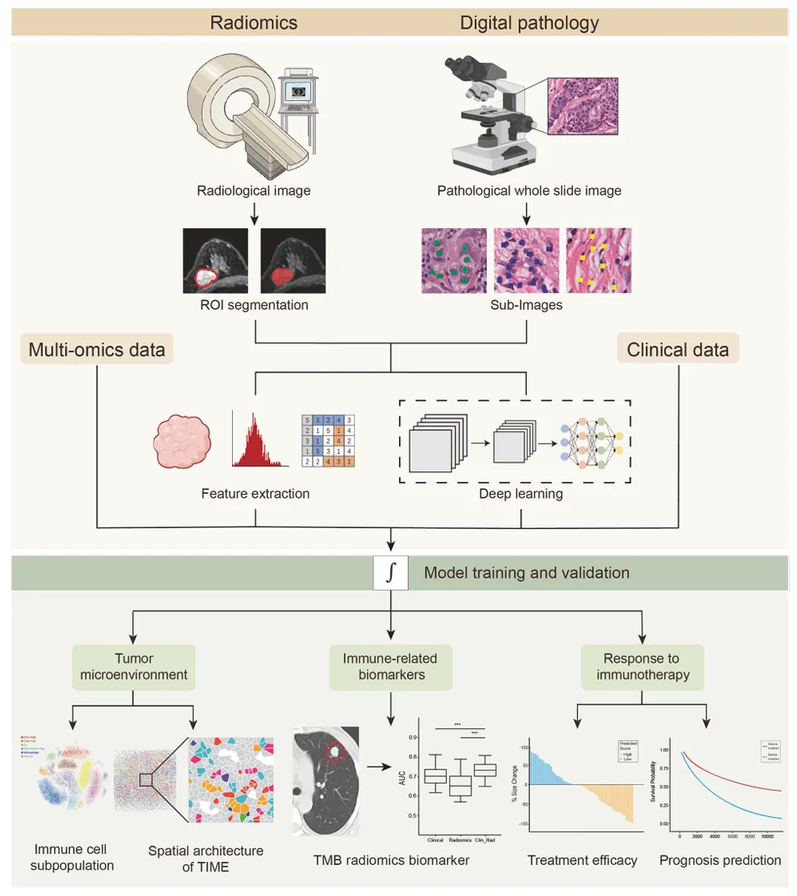
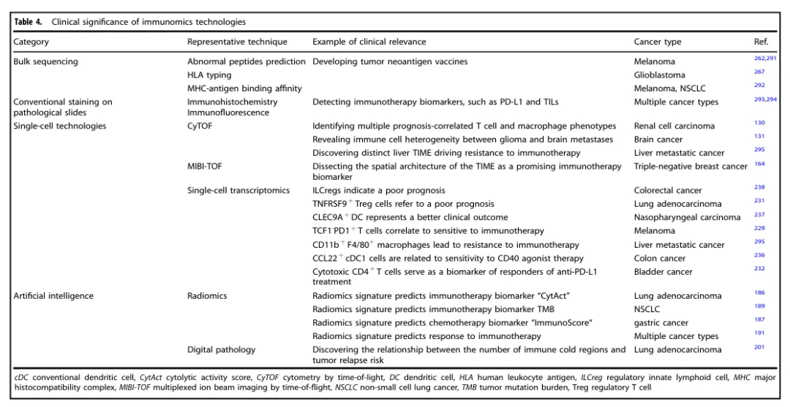
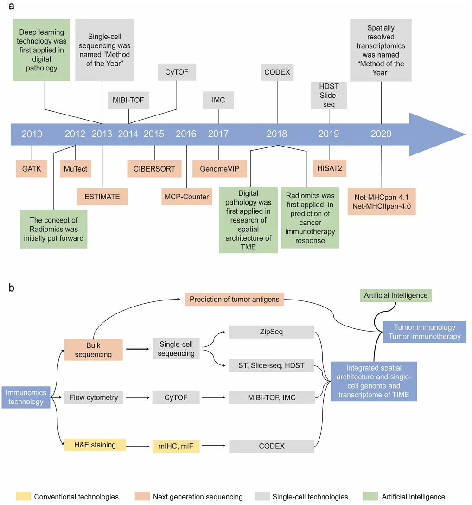

IF=40.8|肿瘤免疫：从免疫基因组学到单细胞分析和人工智能
原文：https://mp.weixin.qq.com/s?__biz=MzAwMzIzOTk5OQ==&mid=2247528433&idx=1&sn=981f7d9c45bd56b094241627f2342e9e&chksm=9b3c16a1ac4b9fb728e76781c63dffc27088cb416eeceabbfb3d27685f917f0000c7e889c5d7#rd 合集：单细胞教程全收录 / 文献速递
一、写在前面
今天分享的是发表在《Signal Transduction and Targeted Therapy》 上题目为"Technological advances in cancer immunity: from immunogenomics to single-cell analysis and artificial intelligence "的文章。

IF： 40.8********
DOI:10.1038/s41392-021-00729-7
二、内容概要
免疫疗法在癌症治疗中起着关键作用。 然而，只有少数患者对免疫检查点阻断和其他免疫治疗策略有反应，因此需要更多新技术来破译肿瘤细胞与肿瘤免疫微环境** （TIME） 成分之间复杂的相互作用。下一代测序的快速发展 ，使高通量基因组和转录组数据可用于计算免疫细胞的丰度和预测肿瘤抗原，称为肿瘤免疫组学 ，单细胞测序技术 能够通过精确的免疫细胞亚群和空间结构研究更好地解剖 TIME，其次放射组学和基于数字病理学的深度学习模型 等人工智能技术对预测免疫治疗的反应方面具有深远的意义。
三、研究背景
肿瘤细胞与附近的正常细胞存在复杂的细胞交流，影响着肿瘤细胞的生长与行为，这些细胞中，免疫细胞是主要参与者，其既促进又抑制癌变、肿瘤进展、转移和复发。这篇综述中，作者主要关注了 TIME，探究如何将免疫细胞的促肿瘤作用转变为抗肿瘤作用。
新一代测序技术的发展极大地推动了免疫基因组学的进展，单细胞测序和人工智能 迎来了肿瘤免疫的新纪元，作者在这篇文章中主要探究了免疫组学在肿瘤中的技术进展和临床意义。
四、主要内容****
1.TIME 简介
近年来，人类对肿瘤的认识发生了巨大变化。肿瘤的定义也从单纯的肿瘤细胞聚集，转变为一个复杂的类似器官结构 ，由肿瘤细胞、免疫细胞、成纤维细胞、血管内皮细胞以及其他间质细胞等组成。TIME的研究热点包括包含免疫浸润、血管、细胞外基质等所有结构的肿瘤周围区域，即肿瘤微环境（ TME） ，肿瘤免疫学的发展，证实了TIME对肿瘤的发生、进展、转移、复发以及潜在治疗靶点起着决定性作用。
TIME主要由免疫细胞和分泌因子 （如细胞因子、趋化因子和生长因子）两大类组成。免疫细胞方面，TIME包含极其多样化的免疫细胞亚群，包括T淋巴细胞、B淋巴细胞、自然杀伤（NK）细胞、巨噬细胞、树突状细胞（DCs）、粒细胞和髓系来源的抑制细胞（MDSCs）等。通常情况下，T细胞、B细胞、NK细胞和巨噬细胞有助于抑制肿瘤生长，而MDSCs和调节性T细胞（Tregs）则倾向于抑制抗肿瘤免疫。但已有研究表明，由于与肿瘤细胞的复杂相互作用，免疫细胞的具体作用可能会动态改变，甚至完全相反。例如，CD8+ T细胞的抗肿瘤功能可能因T细胞耗竭而被抑制，而在低糖酵解肿瘤中，CTLA-4阻断后，Treg细胞功能向干扰素-γ产生细胞的不稳定转变可能会促进抗肿瘤免疫。总之，众多免疫细胞类型以及特定免疫细胞类型的不同功能状态，可能对肿瘤免疫产生相反的影响（Fig.1）。

Fig.1
2.NGS 时代的免疫组学技术——免疫基因组学。
过去二十年里，包括全基因组测序（ WGS）、全外显子组测序（WES）和RNA测序（RNA-seq）在内的下一代测序（NGS）技术已成功开发并应用于获取人类全基因组信息。
在NGS时代，免疫基因组学的研究可通过异常肽预测 、人类白细胞抗原（ HLA）分型和主要组织相容性复合物（ MHC）-肽结合亲和力预测来识别免疫原性蛋白。例如，有研究基于DeepMHCII 算法，通过引入位置编码来进一步提高MHC-II亲和肽预测任务中深度学习模型的性能。
3.定量 TIME中的免疫细胞。
TIME由各种免疫细胞组成，流式细胞术和免疫组织化学等传统技术对于大规模的分析是不切实际的，成本高且组织可用性低，因此研究者们考虑使用计算机模拟分析 ，利用不同细胞类型的基因表达谱差异 来代表免疫细胞类型，计算方法的基本原理主要分为基因富集分析（ GSEA）和反卷积（Table.1-2）。



Table.1-2
基于GSEA 分析的算法主要包括ESTIMATE，xCell和MCP-counter。 STIMATE算法通过单样本基因集富集分析（ ssGSEA）提供免疫得分和基质得分，以代表免疫细胞和基质细胞的比例和分布，可以区分肿瘤和基质成分，但不能区分具体的免疫细胞类型；xCell 是另一种基于ssGSEA的方法，从多个RNA-seq 和微阵列数据源中获取基因集，以表征不同的细胞类型，增加鲁棒性，避免噪声干扰。与ESTIMATE相比，xCell使用溢出补偿校正，更好地区分关系密切且高度相似的细胞类型；MCP-counter 基于标记基因表达水平的几何平均值，为每个TIME细胞群体（包括免疫细胞、内皮细胞和成纤维细胞）生成丰度得分。
****基于反卷积的算法主要包括CIBERSORT，quanTIseq，FARDEEP和MuSiC。CIBERSORT 利用线性支持向量回归和基因表达矩阵来表征免疫浸润成分。quanTIseq 专门用于分析RNA-seq数据，分析流程包括原始RNA-seq数据预处理、基因表达量量化和基于约束最小二乘回归的反卷积。该方法还整合了苏木精-伊红（H&E）、IHC和免疫荧光（IF）染色切片的图像信息，以补充基因表达反卷积，实现免疫细胞绝对比例和独特免疫细胞密度的免疫分析。FARDEEP 关注基因表达中的异常值对反卷积准确性的影响，利用最小截尾平方（LTS）构建适用于重尾噪声数据集的稳健模型。MuSiC 考虑跨个体和跨细胞的一致性，利用scRNA-seq生成细胞类型特异性的基因集，用于批量RNA-seq数据的反卷积分析。以上免疫基因组学技术广泛用于描述特定癌症类型的整体免疫浸润。
4.鉴定肿瘤抗原
基因组水平的突变、转录组水平的突变和蛋白质组水平的改变 可以导致异常蛋白质的表达，即肿瘤抗原 。这些抗原可以被免疫细胞识别并触发抗肿瘤免疫反应。免疫基因组学技术通过计算机模拟分析来预测异常肽段、进行 HLA分型和预测MHC-肽结合亲和力，这对于识别肿瘤抗原非常有帮助和必要。主要包括从WES、WGS或RNA-seq数据中预测异常肽段；进行HLA分型和预测MHC与肽段的结合亲和力，以确定哪些肽段能够被T细胞识别。
新抗原疫苗已成为肿瘤疫苗的主要发展方向。近年来，多项临床试验评估了新抗原疫苗的效果，显示出改善患者生存的潜力。随着测序技术和生物信息学算法的发展，研究人员能够从测序数据中提取最大信息，将遗传异常与抗肿瘤免疫相关联，预测肿瘤抗原，从而设计肿瘤疫苗。
5.单细胞时代的免疫组学
尽管使用NGS技术研究肿瘤免疫学取得了巨大进展，但批量测序的缺陷逐渐显现。批量测序使用从组织或大量细胞群体中提取的RNA（或DNA），可能导致信号稀释低于检测下限，并平均化个体细胞表达模式，掩盖单个细胞的反应。除了肿瘤内异质性（ITH）和免疫细胞的显著多样性外**，**许多重要的生物学现象可能被批量测序在肿瘤免疫探索中掩盖。 在这里，作者比较了一些单细胞水平免疫组学技术（Table.3）。

Table.3
基于蛋白质的单细胞分析****
为进行单细胞研究，在流式细胞仪发展的基础上，研究者们开发了飞行时间流式细胞术 CyTOF ，使用金属同位素而不是荧光团标记抗体，然后使用飞行时间检测器对信号进行定量，该检测器可检测至少 40 个参数，避免了光谱重叠的问题。光谱流式细胞术 是促进传统流式细胞术有效性的另一项最新技术进步。与质谱流式细胞术不同，光谱流式细胞术仍然使用荧光染料标记抗体，但用色散光学元件和测量全发射光谱的新型检测器取代了经典的光学元件和检测器。在实际应用过程中，因费用、处理速度和可操作性的问题，限制了流式细胞术的应用和发展。****
而单细胞技术 的突破彻底改变了对肿瘤免疫的理解，除了TIME中的免疫细胞和肿瘤细胞，所有TIME中的细胞都高度异质，并具有独特的基因表达谱和膜蛋白表达 ，同时，单细胞分析技术的发展为癌症的诊断、监测和治疗提供了新的工具 。通过分析或评估B细胞受体（BCRs）或T细胞受体（TCRs）的库，可以促进诊断和监测工具以及有效免疫疗法的开发。这些技术的发展有助于更好地理解癌症免疫学的机制，从而提高对癌症的诊断和治疗效果。
基于 NGS，单细胞测序可分为以下两个主要步骤：单细胞分离和单细胞分析，整个工作流程包括以下五个基本步骤：单细胞样品制备、全基因组或转录组扩增、文库制备、测序和数据分析。 如何分离单个细胞并保持其生物活性，如何解决扩增引入的巨大技术噪音并提高灵敏度，如何以最低的价格获得最高数量的可测量基因，以及如何更高效地分析数据大大提高了单细胞测序的门槛并限制其广泛使用。
用于研究空间结构的单细胞分析****
研究发现，不仅仅 TIME 的组成部分，而且空间结构也显着影响抗肿瘤免疫，TIME空间结构方法的发展主要分为以下四个阶段，初始或新兴阶段、成长阶段、成熟阶段和后成熟阶段（ Fig.2）。在初始阶段，对H&E染色的肿瘤样本载玻片的组织成分进行显微镜分析，从而提供空间结构的图像。在成长阶段，免疫标记的发展显著改进了TIME空间结构方法。免疫组织化学（IHC）和免疫荧光（IF）利用针对特定细胞中某些抗原的荧光染料或酶报告标记抗体来更精确地区分细胞类型，但与流式细胞术类似，mIHC/IF会受到光谱重叠的限制。进入成熟阶段，编码检测（ CODEX）是一种多重细胞成像方法 ，用设计的特定条形码（包含独特的寡核苷酸序列）代替荧光染料或酶报告物。荧光dNTP类似物和原位聚合物基索引程序有助于提供切片的图像。
在后成熟阶段，空间转录组学技术如GeoMx （来自Nanostring）使用一种靶向FISH检测方法，通过光切割和DNA探针测序，可以在组织的一个选择的微观区域检测多达10,000个基因。这些DNA探针与目标基因杂交，探针面板现在接近全转录组覆盖水平。同时，DBiT-seq 微流控方法，允许以空间分辨的方式将DNA条形码传递到组织切片中，并创建10-50 μm空间条形码像素，也被报道，Seurat 是一种空间映射技术，使用一系列复杂的模型来推断单个细胞的原始空间位置。R 包 （Seurat v3） 可以准确定位细胞亚群。
在单细胞时代，免疫组学技术的发展使研究人员能够更全面地理解肿瘤免疫微环境中的细胞异质性和空间结构。从H&E染色到mIHC/IF，再到空间转录组学等成熟技术，每一步都显著提高了我们对TIME空间结构的理解。

Fig.2
**6.**免疫组学和人工智能。
随着计算机技术的发展，人工智能（ AI），模仿人类认知功能，如学习和决策——已广泛应用于各个领域。在医学领域，科学家关注机器学习甚至更先进的深度学习在疾病诊断、预后和治疗反应预测中的应用。在肿瘤免疫研究中，AI协助临床医生更好地分析与TIME和免疫治疗反应相关的肿瘤免疫特征。AI 在癌症免疫研究中的技术进步主要涉及以下方面：（1）减轻病理切片需要手动识别免疫浸润的工作量；（2）提供一种替代技术，识别肉眼难以区分的免疫细胞亚群和空间结构；（3）提供一种非侵入性方法，预测TIME和免疫治疗反应的特定患者特征。AI在癌症免疫研究中的主要理论是利用高维特征或操作程序深入挖掘患者肿瘤内免疫浸润的特征。
使用深度学习方法预测肿瘤抗原****
解码肿瘤抗原的第一步是预测异常肽段。除了已开发的多种识别单核苷酸变异（SNVs）的算法外，最近设计的CN-learn 工具用于检测拷贝数变异（ CNVs），表现出良好的性能。在HLA 分型方面，Bulik等人生成了一个大型综合数据集，包括各种癌症组织和已发布数据中的HLA类型和HLA肽段，可用于训练全质谱深度学习模型EDGE，最近引入的两种有前景的计算深度学习方法MARIA 和MixMHC2pred，大大提高了MHC-II预测的准确性。这两种深度学习方法的性能超过了之前流行的工具NetMHCIIpan ，这两种程序预测的新抗原已被证明可以刺激反应性的CD4+ T细胞。
随着AI在医学影像学中的发展，影像已不再仅仅是图片，而是大规模的数字数据。从感兴趣区域（ROIs，通常包含肿瘤部位）提取的定量和定性特征可以表征肿瘤的生物学行为 ，并与临床结果相关联 。这一利用AI技术分析影像数据的过程称为放射组学（ radiomics）。放射组学技术在肿瘤免疫中的应用主要用于识别反映免疫浸润的生物标志物，并预测接受免疫检查点阻断（ICB）治疗患者的治疗反应（Fig.3）。

Fig.3
随着技术的进一步发展，放射组学和数字病理学 有望在癌症免疫治疗中发挥更大的作用。这些技术不仅能够提供更详细的免疫信息，还能通过非侵入性方法预测患者的治疗反应和临床结果。未来的研究将集中在标准化放射组学研究和探索其生物学意义，以提高这些技术在临床实践中的应用价值。
7.免疫组学在肿瘤免疫治疗中的应用。****
****癌症免疫治疗主要分为以下六大类 ：溶瘤病毒、细胞因子治疗、抗体治疗、免疫检查点阻断、CAR-T和癌症疫苗。免疫疗法一直是除手术、化疗和放疗之外，在多种类型癌症中最重要的治疗方法之一。然而，大量患者对免疫治疗的反应较低，因此必须事先确定患者的生物标志物，其次验证靶点是否有效。
****通过生物信息学算法和单细胞技术，研究人员可以识别 ICBs的前景生物标志物。利用转录组数据，研究人员可以枚举肿瘤免疫微环境（TIME）中的免疫细胞组成，并使用GSEA基础或细胞解卷积基础算法（如ESTIMATE、CIBERSORT和MCP-counter）估计肿瘤纯度。此外，IMC、CODEX和MIBI-TOF等有前景的技术不仅提供了具有治疗意义的细胞群体，还提供了不同免疫细胞和肿瘤细胞的相对空间分布，这些是潜在的靶点或生物标志物。放射组学技术也能够预测多种癌症类型中患者的免疫浸润状态和对免疫治疗的反应（Table.4）。

Table.4
识别 ICB的生物标志物以进行患者分层****
尽管 ICB 无疑是肿瘤治疗的里程碑，但只有一部分患者从中受益。因此，需要治疗性生物标志物将患者分为对 ICB 敏感和非敏感，并指导精准医疗。作为ICB的靶点，通过IHC检测的PD-L1表达水平是第一个被发现的预测生物标志物，但几项临床试验揭示了ICB在高PD-L1表达患者中的中等疗效。
预测 CAR-T治疗的新抗原****
CAR-T是一种免疫治疗方法，其将转基因或扩增的自体或同种异体 T 细胞再输注到患者体内以增强抗肿瘤免疫力。免疫基因组学主要在CAR-T治疗中鉴定理想的肿瘤抗原。具体来说，一旦获得患者 NGS 数据，就可以进入 CAR-T靶向肿瘤抗原预测，包括异常肽预测、HLA 分型、抗原-MHC 结合亲和力和新抗原优先级等。
为个性化癌症疫苗选择新抗原****
免疫基因组学方法已广泛应用于临床研究中的疫苗开发。一般来说，用于生成个性化疫苗的新抗原是通过分析肿瘤和正常组织的 WES 和 RNA-seq 并通过 NetMHCpan 等算法预测有效表位来鉴定的，肿瘤疫苗开发的关键参数是理想的新抗原鉴定。
五、总结讨论
************ 文章综述了肿瘤免疫学领域的传统及前沿技术，并探讨了其临床应用前景，旨在为研究人员提供参考。在批量测序时代，CIBERSORT 和MCP - counter等计算算法可用于评估肿瘤免疫细胞，帮助更好地探索肿瘤免疫细胞的个体浸润模式。
该技术涵盖异常肽段预测、 HLA分型以及肿瘤抗原 - MHC结合亲和力预测等方面，在临床前和临床研究中均显示出可靠的效力，个性化肿瘤疫苗和CAR-T是其应用的代表。
鉴于免疫细胞亚型的高度多样性和肿瘤内异质性（ ITH），从流式细胞术、光谱流式细胞术到CyTOF等单细胞免疫相关技术的发展，使得单细胞肿瘤免疫图谱能够协助进行免疫细胞亚群分类，以解析肿瘤免疫微环境（TIME）的组成。
通过H&E染色、IHC/IF、MIBI - TOF或空间分辨转录组学等方法，可对TIME进行高分辨率可视化，其中空间分辨转录组学 是2020年的标志性方法。
AI的出现为免疫组学的发展提供了新方向。放射学和病理学图像 衍生的组学数据能够对TIME进行特征描述，以预测预后和对免疫治疗的反应，显示出非侵入性或微创方法在临床应用中的潜力（Fig.4）。

Fig.4

如何联系我们

 留一个领取资料、免费两周学习版服务器的微信号[Biomamba_zhushou]，方便各位随时交流。同时我们也构建了交流群矩阵，欢迎大家入群讨论。
留一个领取资料、免费两周学习版服务器的微信号[Biomamba_zhushou]，方便各位随时交流。同时我们也构建了交流群矩阵，欢迎大家入群讨论。
大家可以阅读完这几篇之后添加给生信入门初学者的小贴士 如何搜索公众号过往发布内容
已有生信基地联系方式的同学无需重复添加

 您点的每个赞和在看，我都认真当成了喜欢
您点的每个赞和在看，我都认真当成了喜欢